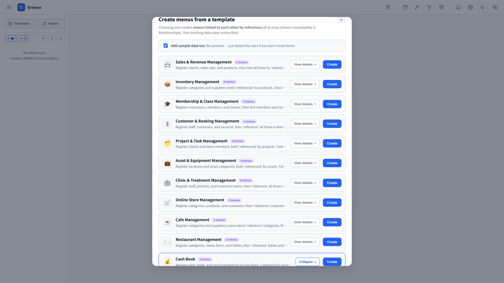
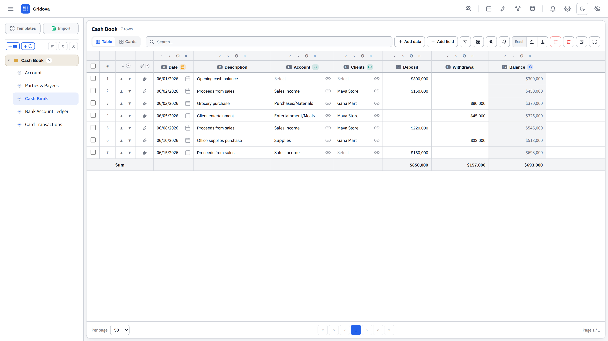
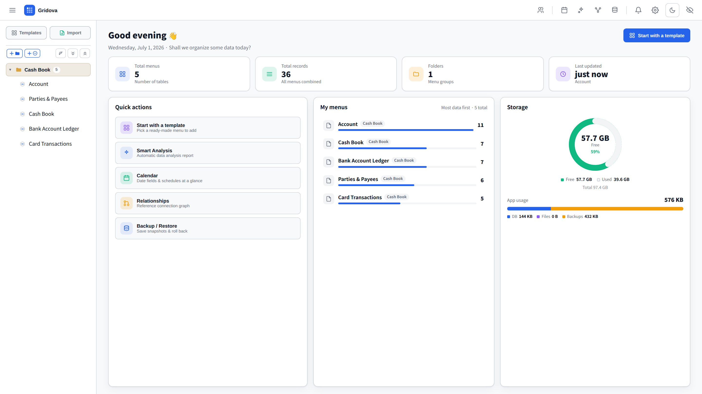
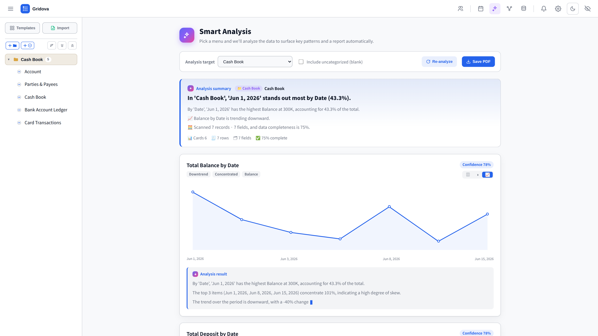
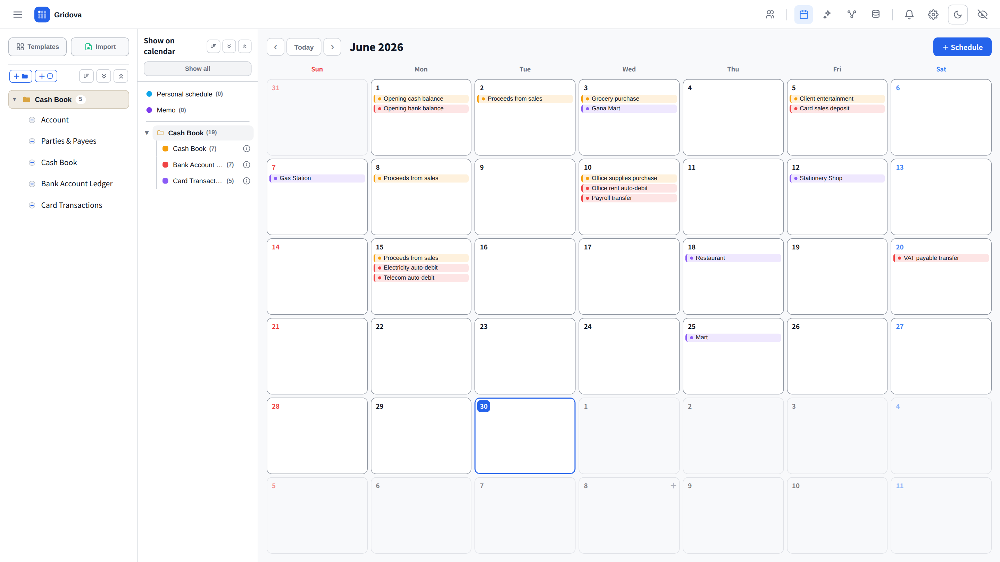
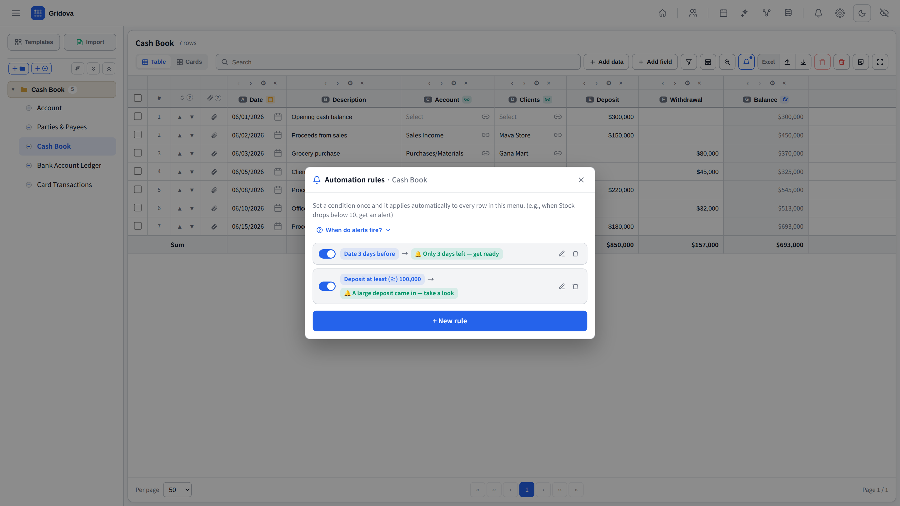
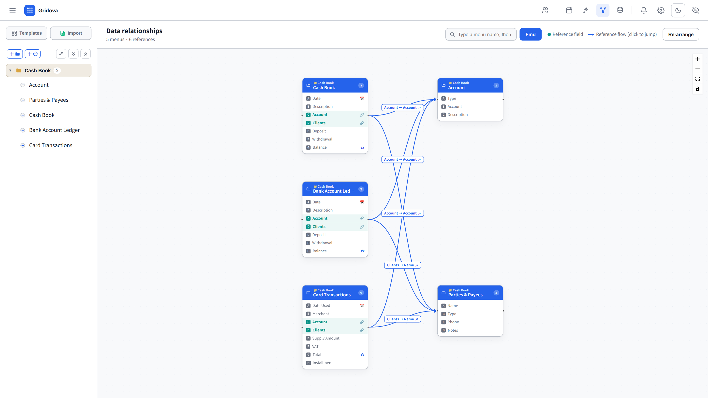
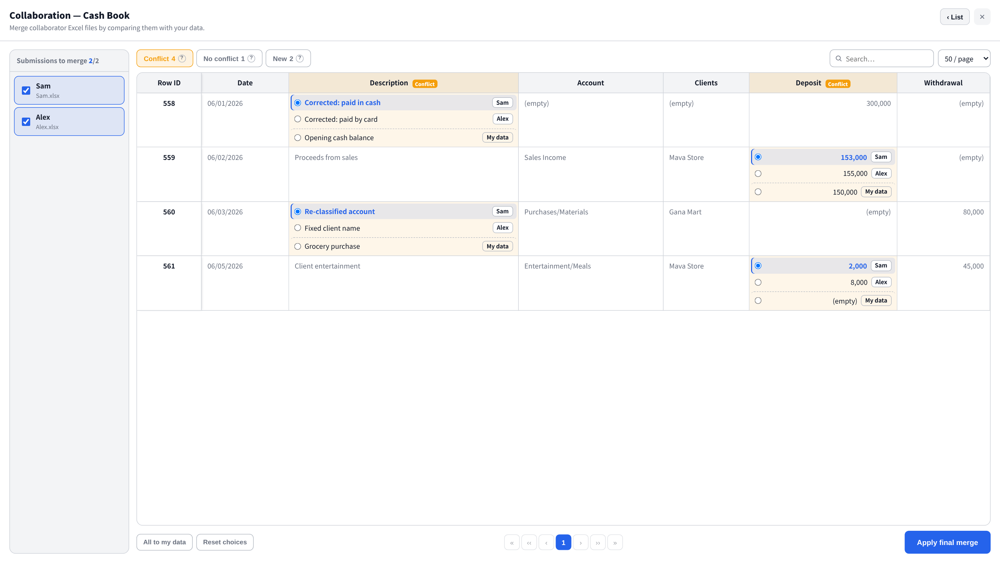

Own your data. Skip the subscription.
The offline desktop app that keeps everything organized and truly yours. All on your own PC. No login, no monthly fee.
Windows 10 / 11 · one-time purchase · 7-day free trial
Up and running in a minute
Ready-made templates like a cash book — pick one and your data is live in seconds. No blank-page paralysis.

Build your table exactly how you want
Number, text, date, formula and reference fields you shape yourself. Link menus together and set up a running balance that carries down each row — as flexible as you need.

Your whole business, at a glance
Open the app and your menus, key numbers and storage are right there — no digging.

Insights in one click — no formulas
Turn raw rows into charts, summaries and trends instantly — no setup, no formulas.

Never miss a date
Date fields, memos and personal schedules come together in one calendar — automatically.

Alerts that watch your data
Set a rule once — "when a date nears or a number crosses a limit, notify me" — and Gridova reminds you automatically. No more relying on memory.

See how everything connects
A relationship graph maps how your menus reference each other — clarity at a glance.

Work together — without stepping on each other
Hand out an Excel file, collect everyone's edits, and merge them back in one screen. Where values disagree, Gridova lines them up side by side so you choose which to keep — nothing gets silently overwritten. Fully offline, no shared account needed.

Easy on the eyes — light & dark
A clean, modern interface that looks great in both light and dark themes.

Whatever you need to keep track of
These are just examples — Gridova is a blank canvas. If you can put it in a table, you can manage it here.
Everything you need
Why Gridova
Questions, answered
Do I have to pay every month?
No. Gridova is a one-time purchase with a 7-day free trial. Install once and keep using it — no subscription, ever.
Does it need an internet connection?
No. Gridova runs fully offline. Your data never leaves your PC and nothing is uploaded to a server.
What if I switch to a new PC?
Your entire workspace saves to a single encrypted backup file. Copy it to any PC and restore everything in seconds.
Is this accounting software?
No — it's a flexible data manager. Simple enough for anyone, with real structure underneath. No bookkeeping knowledge needed.
Which languages are supported?
Seven: English, 한국어, 日本語, Deutsch, Français, Español and Português. Gridova follows your Windows language automatically.
Own your data. Pay once.
Try everything free for 7 days. Then one purchase, and Gridova is yours to keep — no subscription, no cloud, no strings.
Windows 10 / 11 · one-time purchase · 7-day free trial